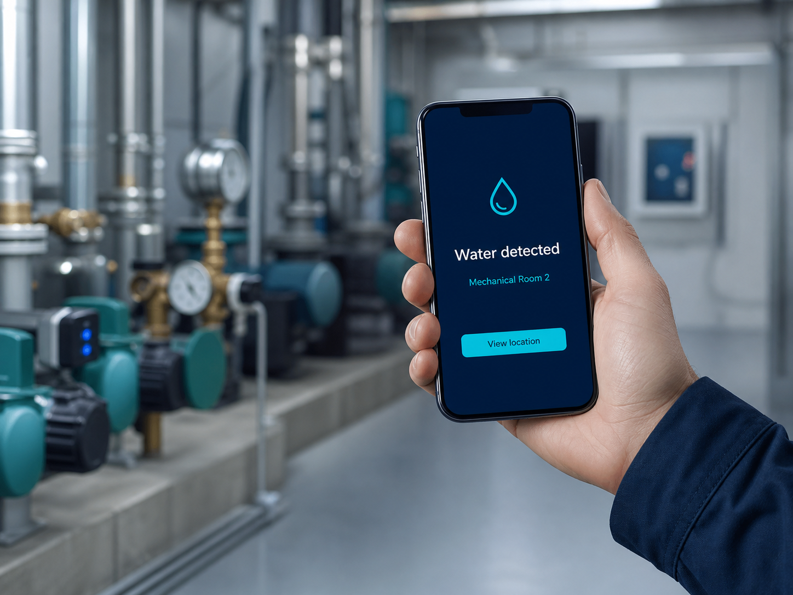
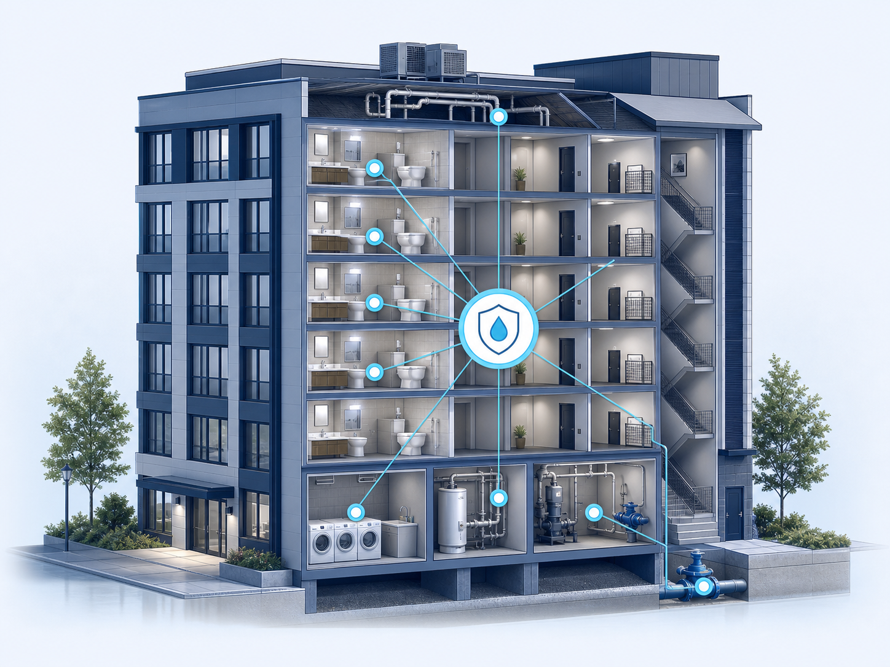

Detect
Monitoring identifies water and environmental risk and, where flow-monitoring equipment is installed, abnormal usage patterns.
Commercial leak detection, freeze monitoring, automatic shutoff options, and ongoing system monitoring for multifamily, hospitality, senior living, student housing, and commercial portfolios.
Commercial-grade water protection technology Professionally designed, installed, and managed by NestShield.
NestShield combines property-level planning with continuous automated monitoring, clear escalation procedures, and records that document active water-loss mitigation.

A useful alert tells your team what happened, where it happened, and what to do next. NestShield builds the response path around your property and your people.
Commercial water-loss research shows why distributed sensors, exact-location alerts, environmental monitoring, and fast response belong in a practical property-protection plan.
Many commercial water events occur after hours or on weekends, when buildings may be lightly staffed and response can take longer.
Toilets, sinks, water heaters, HVAC equipment, mechanical areas, kitchens, and laundry spaces are common water-event locations.
An upper-floor plumbing failure can spread through ceilings, shafts, walls, and occupied spaces before the source is identified.
Environmental monitoring can help protect buildings, equipment, occupants, food, medication, and other sensitive spaces.
Source: Alert Labs, 2026 State of Water Management. Findings are summarized as industry research and do not represent NestShield results or an affiliation with Alert Labs.
We audit, install, and monitor every building you own — under one contract and one phone number. Add buildings as you grow.
Wireless monitoring at the building’s highest-risk water locations, selected during the site assessment. When the system detects a problem, designated contacts receive a location-specific alert.
Ready to walk a building? Book a 20-min Call
Every property is different. NestShield begins with a commercial risk review, then designs monitoring around the building’s most consequential failure points.

Monitoring identifies water and environmental risk and, where flow-monitoring equipment is installed, abnormal usage patterns.
The right contacts receive a location-specific notification.
Your team follows the agreed escalation and shutoff procedure.
The event and response become part of the property risk record.
Audit, install, monitor. We do all three. No tenant coordination on your end. No secondary vendors.
We walk one of your properties. You get a written report: where leaks are most likely, what each one would cost, and what to do about it. The audit fee is 100% credited toward install.
Wireless monitoring on every leak point — under sinks, behind toilets, around water heaters, at every shutoff. 90%+ of installs need no drywall cuts, no wiring, no permits. Licensed plumbing where premium shutoff valves go in.
Sensors communicate over a dedicated long-range wireless network and do not rely on the building’s Wi-Fi. Internet connectivity requirements are confirmed during the property review.Once installed, the system continuously monitors configured locations and delivers alerts around the clock to designated maintenance contacts. NestShield helps establish the escalation procedure, maintains the system, and documents reportable events.
One escalation path — one invoice — entire portfolioPublished YoLink/Raedius case studies describe commercial deployments at residential, institutional, healthcare, warehouse, construction, and other large properties.
A published vendor case study describes a multi-building residential community using hundreds of leak sensors, zone valves, and main-line shutoff controls to improve detection and response across the property.
Published Raedius case studies describe commercial and institutional properties using centralized dashboards to manage sensors, alerts, device status, and multiple buildings.
YoLink reports deployments across multifamily housing, schools, warehouses, healthcare, construction, manufacturing, and other commercial environments.
Long-range sensors, shutoff controls, and centralized monitoring have been deployed in real commercial settings.
Vendor-published case studies are not independent verification and should not be read as NestShield performance results.
NestShield assesses, designs, installs, configures, monitors, maintains, escalates, and documents each property’s system.
Source: YoLink Raedius Case Studies. Deployment descriptions are vendor-reported and are not presented as independently verified results.
NestShield designs, installs, monitors, and maintains commercial water-loss prevention systems using long-range wireless sensors, environmental monitoring, automatic shutoff controls, and centralized property-management technology.
The system can be configured for individual buildings, multifamily communities, hotels, schools, healthcare facilities, warehouses, and multi-property portfolios.
Long-range wireless devices are designed to communicate across large properties and through areas where conventional Wi-Fi devices may struggle.
Point sensors are installed at high-risk locations including water heaters, mechanical equipment, plumbing fixtures, laundry areas, kitchens, and HVAC drain pans. Alerts identify the building and monitored location.
Where appropriate, automatic controls can isolate a fixture, unit, zone, riser, or water service when a leak is detected. Final design depends on the building’s plumbing and operational priorities.
Authorized personnel can monitor devices, alerts, activity, and configured properties from one system. Available features and service levels are defined in each NestShield proposal.
NestShield begins with strategically placed sensors at high-risk locations such as plumbing fixtures, water heaters, HVAC drain pans, mechanical rooms, kitchens, laundry areas, and risers.
Point sensors provide exact-location alerts when water appears where it should not.
For properties requiring broader water-usage intelligence, flow monitoring and additional water-management capabilities may be incorporated into the system design.
We walked buildings for 28 years before we built a monitoring service. That changes what we look for.
Most monitoring vendors lead with a hardware quote. NestShield leads with an audit — what’s at risk in your building, what each failure would cost, what to do about it. Hardware only comes after we’ve walked the building.
Based in Savannah, serving buildings across Georgia. Audits travel anywhere in the country. Either way, you’re talking to a person who can show up — not a help desk in another state.
Our reports document active water-loss mitigation for property records and insurance conversations. That documentation may help strengthen underwriting submissions and demonstrate a repeatable risk-management process.
Start with a walkthrough and receive a written summary of high-risk locations, monitoring priorities, escalation contacts, and recommended next steps.
Answers to the questions property managers and asset managers ask before signing.
No. Most sensors are wireless and battery-powered — no cutting, no drilling, no water shutoffs. We schedule by floor during normal business hours. Your facilities team gets a coordination brief before we start.
Very few. Equipment and alert rules are matched to each monitored location. Point sensors detect water where it should not be, while flow-monitoring systems can identify abnormal usage patterns and duration. Alerts include the property and exact monitored location.
No. NestShield runs on top of your existing team. Your staff gets a clean alert with exact location and severity, so reactive emergency calls turn into scheduled dispatches. We onboard your team and give you a written escalation playbook for your SOPs.
Sensors alone are detection. They don’t tell you where to put them, when to replace them, or how to package the data for your insurance carrier. NestShield adds the site review, installation planning, staff coordination, continuous automated monitoring, 24/7 alert delivery, documented escalation procedures, and insurance-ready paperwork. You’re paying for accountability, not parts.
NestShield manages scheduled battery service, failed-device replacement, and system lifecycle planning under the selected monitoring agreement. Exact coverage, replacement terms, and upgrade provisions are defined in each service proposal.
Roughly one day per 100 units. 90%+ of sensors need no permits, no cutting, no utility shutoffs. The optional shutoff valves require brief scheduled water outages — coordinated with your maintenance team.
We walk one of your properties. You get a written report: where leaks are most likely, what each one would cost, and what to do about it. 100% credited toward install.
Know the weak points. Build the response. Document the protection.
Schedule a Property Risk Review